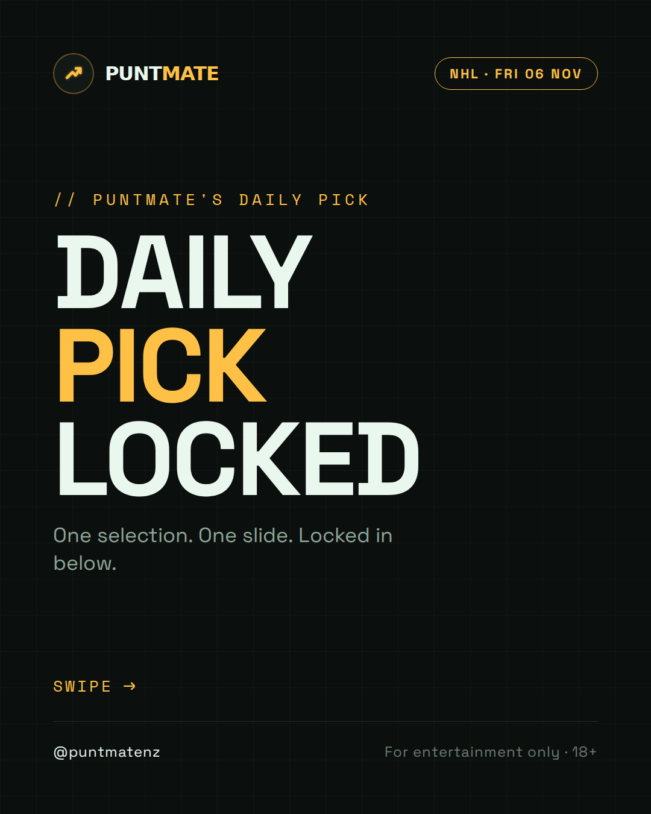
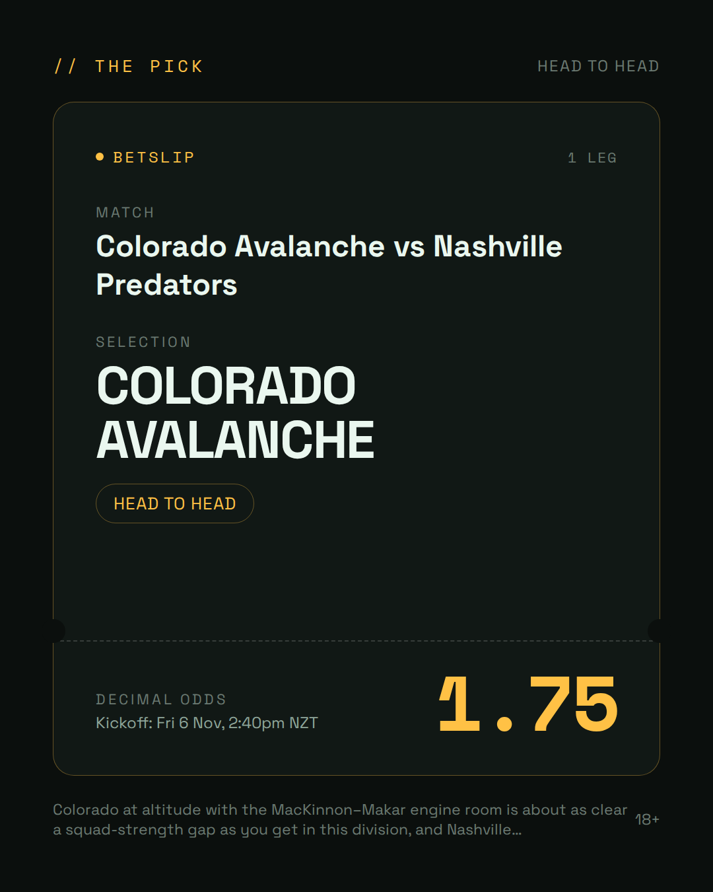
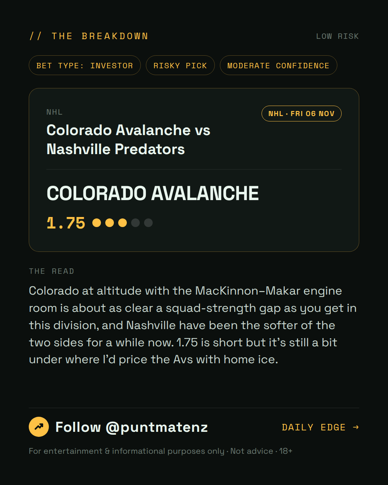
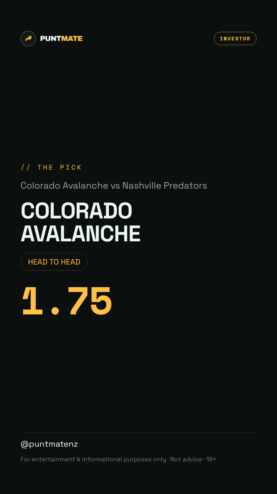

*🎯 PUNTMATE NZ — NHL* 🏟 Colorado Avalanche vs Nashville Predators *PICK:* COLORADO AVALANCHE *ODDS:* 1.75 (Head to Head) *BET TYPE: INVESTOR* _Colorado at altitude with the MacKinnon–Makar engine room is about as clear a squad-strength gap as you get in this division, and Nashville have been the softer of the two sides for a while now. 1.75 is short but it's still a bit under where I'd price the Avs with home ice._ ────────────────── 📲 Join Telegram for daily picks ⚠️ For entertainment & informational purposes only. Not advice. 18+.
🎯 NHL — Colorado Avalanche vs Nashville Predators COLORADO AVALANCHE @ 1.75 (Head to Head) BET TYPE: INVESTOR This one's about as close to a sure thing as sport gets — the numbers stack up and the price still pays. Colorado at altitude with the MacKinnon–Makar engine room is about as clear a squad-strength gap as you get in this division, and Nashville have been the softer of the two sides for a while now. 1.75 is short but it's still a bit under where I'd price the Avs with home ice. Follow for daily value picks → @puntmatenz ⚠️ For entertainment & informational purposes only. Not advice. 18+. #PuntmateNZ #SportsBetting #NZTAB #NHL
| has_pick | True |
| pick_id | 2026-11-06_Colorado_Avalanche_vs_Nashville_Predators |
| run_id | 42139659636 |
| generated_at | 2026-11-06T00:52:27.831556+00:00 |
| post_date | 2026-11-06 |
| match | Colorado Avalanche vs Nashville Predators |
| sport | icehockey_nhl |
| sport_label | NHL |
| market | Head to Head |
| selection | COLORADO AVALANCHE |
| odds | 1.75 |
| bet_type | INVESTOR_BET |
| bet_type_label | BET TYPE: INVESTOR |
| bet_type_reason | This one's about as close to a sure thing as sport gets — the numbers stack up and the price still pays. Colorado at altitude with the MacKinnon–Makar engine room is about as clear a squad-strength gap as you get in this division, and Nashville have been the softer of the two sides for a while now. 1.75 is short but it's still a bit under where I'd price the Avs with home ice. |
| classification | RISKY_PICK |
| risk | RISKY_PICK |
| confidence | MODERATE |
| confidence_label | MODERATE |
| final_explanation | Colorado at altitude with the MacKinnon–Makar engine room is about as clear a squad-strength gap as you get in this division, and Nashville have been the softer of the two sides for a while now. 1.75 is short but it's still a bit under where I'd price the Avs with home ice. |
| public_caution | Keep this one light — the value's there but so is the uncertainty. |
| theme | night |
| carousel_paths | ['data/review/2026-11-06_Colorado_Avalanche_vs_Nashville_Predators/cover.png', 'data/review/2026-11-06_Colorado_Avalanche_vs_Nashville_Predators/tip.png', 'data/review/2026-11-06_Colorado_Avalanche_vs_Nashville_Predators/breakdown.png'] |
| carousel_urls | ['https://raw.githubusercontent.com/kingofthecastle24/puntmate/main/data/cards/2026-11-06_Colorado_Avalanche_vs_Nashville_Predators_night_1_cover.png', 'https://raw.githubusercontent.com/kingofthecastle24/puntmate/main/data/cards/2026-11-06_Colorado_Avalanche_vs_Nashville_Predators_night_2_tip.png', 'https://raw.githubusercontent.com/kingofthecastle24/puntmate/main/data/cards/2026-11-06_Colorado_Avalanche_vs_Nashville_Predators_night_3_breakdown.png'] |
| story_path | data/review/2026-11-06_Colorado_Avalanche_vs_Nashville_Predators/story.png |
| story_url | https://raw.githubusercontent.com/kingofthecastle24/puntmate/main/data/cards/2026-11-06_Colorado_Avalanche_vs_Nashville_Predators_night_story.png |
| intended_platforms | ['telegram', 'instagram_feed', 'instagram_story', 'facebook'] |
| workflow_state | GENERATED |
| has_punter_multi | False |
| has_gambler_multi | False |
| has_degenerate_multi | False |